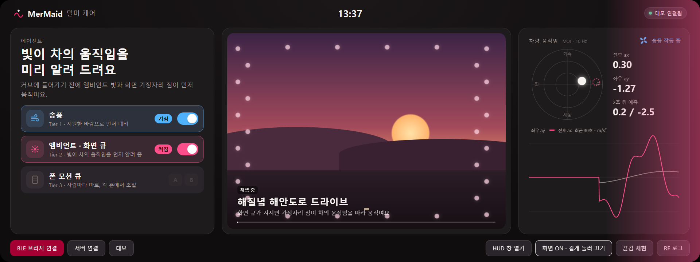
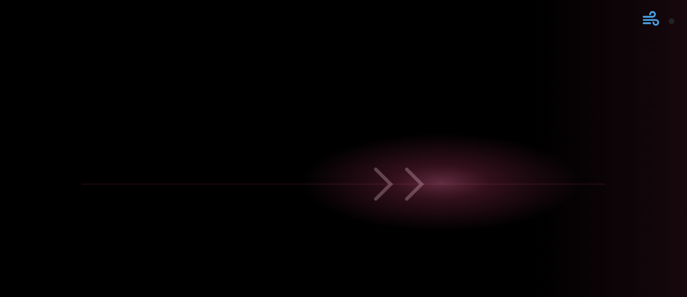
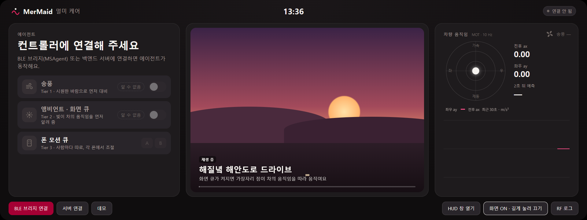

탑승객 앱 (Android · Galaxy S22+ 기준)
차량 디스플레이 · HUD
| 문서 번호 | MM-UI-001 |
|---|---|
| 버전 | v0.2 (검토용) · 2026-11-17 |
| 작성 | MerMaid 팀 · 프론트엔드(UI/UX) |
| 관련 문서 | MM-REQ-001 요구사항정의서 v0.1 · GitHub protocol/ v1 |
| 표기 | 목업 크기는 Galaxy S22+ 384 × 832 dp 기준. 숫자 원(●)은 오른쪽 표의 항목 번호 |
| 화면 ID | 화면명 | 유형 | 설명 | 쪽 |
|---|---|---|---|---|
| APP-01 | 시작 | 앱 화면 | 첫 실행 소개, 무엇을 하는 앱인지 | 4 |
| APP-02 | 권한 안내 | 앱 화면 | 블루투스 · 알림 · 다른 앱 위에 표시 · 배터리, 4단계 | 4 |
| APP-03 | 차량 등록 | 시스템 + 앱 | MSAgent 브리지를 1회 등록(CDM), 완료 안내 | 5 |
| APP-04 | 멀미 프로필 | 앱 화면 | MSSQ-Short 설문과 결과(민감도) | 6 |
| APP-05 | 홈 | 앱 화면 | 연결 상태, 개입 상태, 수동 조작. 상태별 변형 | 7 |
| OVL-01 | 모션 큐 (세로) | 오버레이 | 타 앱 위에 그리는 점. 터치 통과 | 8 |
| SYS-01 | 상주 알림 · 빠른 설정 | 시스템 UI | 백그라운드 상태 표시와 즉시 조작 | 8–9 |
| OVL-02 | 모션 큐 (가로 전체 화면) | 오버레이 | 동영상 전체 화면에서의 배치 | 9 |
| APP-06 | 설정 | 앱 화면 | 큐 표시, 연결, 프로필, 권한 | 10 |
| APP-07 | RF 진단 | 앱 화면 | 연결 지표와 로그 | 10 |
| DSP-01 | 차량 디스플레이 | 웹 1920×720 | 개입 상태 · 공용 장치 조작 · 화면 큐 · 상태 변형 | 11–12 |
| HUD-01 | HUD | 웹 (반사) | 가속 방향 앰비언트 큐 · 화면 게이트 | 11–12 |
| 버전 | 날짜 | 내용 |
|---|---|---|
| v0.1 | 2026-11-17 | 최초 작성 (탑승객 앱 Android 재정의, DSP·HUD v0.1) |
| v0.2 | 2026-11-17 | DSP-01·HUD-01 v0.2 구현 반영: 화면 OFF 길게 누르기, '알 수 없음' 상태, LEARN 안내, HUD 화면 게이트 연동 (12쪽 추가) |
APP-05 홈에서 언제든 APP-04(프로필), APP-06(설정), APP-07(진단)으로 이동. 앱을 닫아도 서비스는 계속 동작.
| 물리 해상도 | 1080 × 2340 px, 6.6″, 120 Hz |
| 설계 기준 | 384 × 832 dp (×2.8125) |
| 상태 표시줄 | 약 34 dp, 펀치홀 중앙 |
| 제스처 바 | 하단 약 20 dp (3버튼일 때 48 dp) |
| 좌우 여백 | 20 dp |
| 최소 터치 영역 | 48 × 48 dp |
| 방향 | 앱 화면 세로 고정, 오버레이는 세로·가로 모두 |
| 테마 | 시스템 따름(라이트/다크). 이 문서는 라이트로 표기 |
상태 표시줄·제스처 바 크기는 기기 설정에 따라 다르므로 코드에서는 WindowInsets 값을 쓴다. dp 기준은 실기 확인 필요.
| Brand | #A50034 · 주요 버튼, 강조 |
| Ink | #1E1B1D · 본문 |
| Paper | #F6F3F0 · 배경 |
| Tier 1 | #1683D8 · 송풍 |
| Tier 2 | #D61F69 · 앰비언트 |
| Tier 3 | #C77700 · 모션 큐 |
| 연결됨 | #1F9D68 |
| 끊김 | #C62828 |
| 제목 1 | 24 / ExtraBold |
| 제목 2 | 18 / ExtraBold |
| 본문 | 15 / Regular |
| 보조 | 13 / Regular, #7A7074 |
| 점 | 지름 10 dp, 흰색 + 1 dp 어두운 테두리 |
| 불투명도 | 기본 0.8 (최대 0.8, 터치 통과 조건) |
| 배치 | 좌우 각 2열 × 8행, 상하 각 1행 × 5개 |
| 여백 | 가장자리에서 18 dp, 열 간격 16 dp |
| 회피 | 상태 표시줄·펀치홀·제스처 바 영역 |
| 이동 | ±3 m/s²에서 최대 24 dp (약/중/강 = 16/24/32) |
| 방향 | ay+(왼쪽 가속) → 오른쪽, ax+(가속) → 아래 |
| 등장 · 퇴장 | 페이드 0.3 초 / 끊김 시 즉시 |
| # | 요소 | 설명 · 동작 |
|---|---|---|
| 1 | 핵심 문구 | 발표 헤드라인과 같은 문장. 앱의 목적을 한 줄로 |
| 2 | 특징 3가지 | 자동 연결 · 타 앱 위 큐 · 학습. “앱을 계속 볼 필요가 없다”를 먼저 알림 |
| 3 | 시작하기 | APP-02로 이동. 첫 실행에만 표시(이후 바로 APP-05) |
| 4 | 단계 표시 | 4단계 중 현재 위치. 이미 허용된 단계는 자동으로 건너뜀 |
| 5 | 미리보기 | 점이 가장자리에서 움직이는 짧은 애니메이션. 왜 권한이 필요한지 보여 줌 |
| 6 | 권한 목록 | 순서: 블루투스(BLUETOOTH_SCAN/CONNECT) → 알림(POST_NOTIFICATIONS) → 다른 앱 위에 표시(SYSTEM_ALERT_WINDOW, 시스템 설정 화면으로 이동) → 배터리 제한 없음(One UI 설정 안내). 상태: 허용됨 / 지금 / 다음 / 거부됨 |
| 7 | 허용 · 나중에 | 시스템 권한 창 또는 설정 화면을 연다. 돌아오면 상태를 다시 확인. “나중에”를 눌러도 다음 단계로, 빠진 권한은 홈에 배너로 표시 |
| # | 요소 | 설명 · 동작 |
|---|---|---|
| 1 | 시스템 기기 선택 창 | 앱이 아닌 Android가 띄우는 창(CompanionDeviceManager). 필터: 이름 접두어 MSAgent- + 서비스 UUID cd820001-…. 이 창으로 등록해야 탑승 시 자동 실행 권한이 생김 |
| 2 | 기기 목록 | 신호 세기 순. 여러 대면 차에 붙은 라벨(MAC 끝 4자리)과 비교하도록 안내 |
| 3 | 허용 | 등록 + 본딩(LE Secure Connections, Just Works — 숫자 입력 없음). 첫 연결 시 HELLO, 프로필 전송 |
| 4 | 완료 표시 | 등록 이름. 실패 시(“찾을 수 없음”) 다시 찾기 · 도움말(차 시동, 블루투스 켜기) |
| 5 | 등록 정보 | 암호화 상태, 자동 연결 스위치(기본 켬), 기기 ID(앱이 처음 만든 UUID, 63자 이하) |
| 6 | 다음 | APP-04 프로필로. 건너뛰면 기본 프로필(MSSQ 12.90, 민감도 1.0) |
| # | 요소 | 설명 · 동작 |
|---|---|---|
| 1 | 시기 탭 | 어릴 때(12세 전) / 최근 10년. 각 9문항 |
| 2 | 문항 · 응답 | 9종 탈것 × 5단계: 타 본 적 없음(—) · 전혀 0 · 가끔 1 · 때때로 2 · 자주 3. 한 줄에 한 문항, 버튼 32 dp(행 전체 높이 48 dp) |
| 3 | 진행 · 지금 점수 | 응답 수와 실시간 점수. 구간 점수 = 합 × 9 ÷ (9 − 미경험 수) |
| 4 | 원점수 | A + B (0~54). 링은 54 기준 비율 |
| 5 | 민감도 · 설명 | sens = clip(exp(0.3·(mssq−12.90)/9.90), 0.5, 2.0). 구간 문구: <0.85 둔감 / 0.85~1.15 보통 / >1.15 조금 민감 / >1.5 민감 |
| 6 | 상세 | 구간별 점수, 재연결 때 컨트롤러가 보낸 PROF 값(승객 조작으로 바뀐 민감도) |
| 7 | 저장 | 기기에 저장 → 연결돼 있으면 즉시 PROF{mssq, sens} 전송, 아니면 다음 연결 때 |
| # | 요소 | 설명 · 동작 |
|---|---|---|
| 1 | 연결 칩 | 연결됨 / 차 찾는 중 / 신호 없음 / 미등록. 누르면 APP-07 진단 |
| 2 | 안내 카드 | 연결 직후 “이제 다른 앱을 쓰셔도 돼요”. [홈 화면으로] = 앱을 백그라운드로(서비스 유지) |
| 3 | 개입 상태 · 조작 | Tier 1·2·3 상태(INT)와 스위치. 누르면 OVR(airflow-01 / display-01 / 내 ID). 회신 전에는 흐리게, 3초 무회신 시 되돌림 |
| 4 | 학습 안내 | 수동 조작이 다음 판단에 반영된다는 설명(POLICY) |
| 5 | 프로필 · 이동 | APP-04, APP-06 설정, APP-07 진단 |
| 6 | 끊김 배너 | 5초 무수신 시 즉시 표시, 오버레이 제거(NFR-01). 재연결 시도 시각 표시. 복구되면 자동으로 사라짐 |
| 7 | 비활성 상태 | 연결 전 상태는 “알 수 없음”, 스위치 비활성 |
| 8 | 기타 상태 | 차 찾는 중(대기) · 미등록 · 권한 필요. 각각 해결 버튼 제공 |
| # | 요소 | 설명 · 동작 |
|---|---|---|
| 1 | 좌우 점 (2열 × 8행) | INT tier 3 on 수신 시 어떤 앱 위에서도 표시. MOT 10 Hz로 관성 방향 이동(그림: ay−, 우회전 → 왼쪽). 프레임마다 보간 |
| 2 | 상하 점 (1행 × 5) | 가속·제동이 보이게. 가속(ax+) → 아래, 제동 → 위 |
| 3 | 중앙 비움 · 터치 통과 | 콘텐츠는 가리지 않고, 화면을 누르면 아래 앱이 받음(NOT_TOUCHABLE, 불투명도 ≤ 0.8) |
| 4 | 안전 영역 | 상태 표시줄 · 펀치홀 · 제스처 바에는 점을 두지 않음 |
| 5 | 시작 안내 필 | 처음 켜질 때 1.5초 “모션 큐 시작”(터치 불가, 설정에서 끔). OFF 수신 → 0.3초 페이드, 끊김 → 즉시 제거 |
| 6 | 빠른 설정 타일 | “모션 큐”: 켜짐(앰버) / 꺼짐(흰색) / 연결 안 됨(비활성). 탭 = OVR{dev:내 ID} |
| 7 | 상주 알림 | 포그라운드 서비스 알림(중요도 낮음, 소리·진동 없음). 제목 = 내 큐 상태, 내용 = Tier 1·2 · 차량 이름. 상태별 문구는 다음 쪽 |
| 8 | 알림 버튼 | [모션 큐 끄기/켜기] → OVR, [앱 열기] → APP-05 |
| # | 요소 | 설명 · 동작 |
|---|---|---|
| 1 | 펀치홀 회피 | 가로에서는 펀치홀이 왼쪽. cutout 쪽 여백을 더 둠 |
| 2 | 재배치 | 회전 시 좌우 2열 × 5행, 상하 1행 × 7개로 다시 배치. 승객이 정면을 본다고 가정해 좌우 가속은 화면 좌우로 |
| 3 | 전체 화면 위 | 타 앱이 시스템 바를 숨겨도 오버레이는 그 위에 표시(cutout 모드 ALWAYS) |
| 상태 | 알림 제목 | 알림 내용 | 버튼 | 타일 |
|---|---|---|---|---|
| 대기 (차 없음) | 알림 없음 — 시스템이 감시만 함 | 비활성 | ||
| 연결 중 | 차와 연결하는 중 | MSAgent-1A2B | — | 비활성 |
| 연결됨 · 개입 없음 | 차량과 연결됨 | 편안한 주행이에요 | 앱 열기 | 꺼짐 |
| Tier 1·2 켜짐 | 차량과 연결됨 | 송풍 켜짐 · 앰비언트 켜짐 | 모션 큐 켜기 · 앱 열기 | 꺼짐 |
| Tier 3 켜짐 | 모션 큐가 켜져 있어요 | 송풍 켜짐 · 앰비언트 꺼짐 | 모션 큐 끄기 · 앱 열기 | 켜짐 |
| 신호 없음 | 연결이 끊겼어요 | 안전을 위해 점을 껐어요 · 다시 연결 중 | 앱 열기 | 비활성 |
| 권한 필요 | 점을 표시할 수 없어요 | “다른 앱 위에 표시”를 허용해 주세요 | 허용하기 | 비활성 |
| # | 요소 | 설명 · 동작 |
|---|---|---|
| 1 | 미리보기 | 설정을 바꾸면 바로 반영되는 작은 큐 애니메이션 |
| 2 | 움직임 크기 · 진하기 | 약/중/강 = 최대 이동 16/24/32 dp. 진하기 0.3~0.8 (0.8 넘으면 터치 통과가 막혀 상한) |
| 3 | 색 · 시작 안내 | 흰색(기본) / 앰버. 시작 안내 필 켜기 |
| 4 | 연결 | 자동 연결 끄면 CDM 감시 중지(앱을 열 때만 연결). [해제] → 등록 삭제·본딩 해제 확인 창 |
| 5 | 기타 | 프로필(APP-04), 권한 상태(빠진 것 → 설정 이동), 버전·기기 ID |
| 6 | 5초 링 | 마지막 수신 후 경과. 0~2.5초 초록, ~5초 주황, 5초 넘으면 빨강 = 안전 OFF |
| 7 | 지표 | 상태, 브리지, RSSI, MTU(247이 아니면 경고), HB, 마지막 SCR |
| 8 | 로그 | → 보냄 / ← 받음. MOT·HB는 개수만. 개발 빌드에는 [데모 모드] 버튼 추가 |

1 2 3 4 5 6 7
8 9| # | 요소 | 설명 · 동작 |
|---|---|---|
| 1 | 상황 문구 | 평온 / 송풍 대비 / 빛 안내 / 연결 끊김 |
| 2 | 공용 장치 | 송풍·앰비언트 상태 + 스위치 → OVR airflow-01 / display-01 |
| 3 | 좌석별 폰 큐 | A·B Tier 3 (로컬 백엔드 DBG일 때만) |
| 4 | 콘텐츠 + 화면 큐 | Tier 2 동안 가장자리 점, 가속 방향 쪽 가장자리 빛 |
| 5 | 차량 움직임 | G-미터(현재 · 2초 뒤 예측 점선), ax·ay, 30초 그래프, 송풍 표시 |
| 6 | 연결 칩 | BLE / 서버 / 데모, 끊기면 빨강 + 안전 OFF 배너 |
| 7 | 하단 조작 | 연결, HUD 창 열기, 화면 ON/OFF(Tier 2 게이트, 1.2초 길게 눌러 끄기), RF 로그 |
| 8 | HUD 빛 | 검은 바탕, 가속 방향 쪽으로 이동하는 빛 덩어리 + 갈매기표. 예측값이 있으면 먼저 움직임 |
| 9 | 송풍 · 연결 | Tier 1 아이콘, 연결 점(끊기면 깜박임). 설정 패널: 반사(좌우/상하)·밝기·크기, 3.5초 뒤 숨김 |

1 2 3| # | 요소 | 설명 · 동작 |
|---|---|---|
| 1 | 상황 문구 | 연결 전 “컨트롤러에 연결해 주세요”, 끊김 후 “연결이 끊겨 개입을 모두 껐어요” |
| 2 | 알 수 없음 | 연결 전·신호 없음일 때 공용 장치 상태를 꺼짐으로 단정하지 않음. 점선 칩 + 스위치 비활성, 송풍 표시 “—” (APP-05 ⑦과 같은 규칙) |
| 3 | 연결 칩 | 연결 안 됨(회색) → 연결 중(주황) → 연결됨(초록) / 신호 없음(빨강) |
| 4 | LEARN 안내 | 디스플레이에서 송풍·앰비언트를 직접 조작하면 표시. 켜진 지 30초 안에 끄면 허용도 +1, 끈 기기는 300초 쿨다운, 꺼진 것을 켜면 −1 (POLICY.md). HUD 버튼은 민감도를 바꾸지 않음. 판단은 컨트롤러, 화면은 설명만 |
| 5 | 화면 OFF 길게 누르기 | 1.2초 누르는 동안 버튼이 빨갛게 참 → SCR{on:false}(Tier 2 게이트 닫힘). 짧게 누르면 안내만. 꺼진 화면은 한 번 탭으로 켜짐. 키보드 Enter/Space 길게 눌러도 동작 (DSP-F-07) |
| — | HUD 화면 게이트 | 디스플레이 화면을 끄면 HUD 빛·송풍 아이콘도 함께 꺼짐(같은 차량 화면 앱). 연결이 끊기면 페이드 없이 즉시 꺼짐 (NFR-01 ≤ 100 ms) |
| — | RF 로그 | HB 줄은 빼고 상단 지표(HB↑/↓)에 개수만 — 앱 APP-07과 같은 방식 |